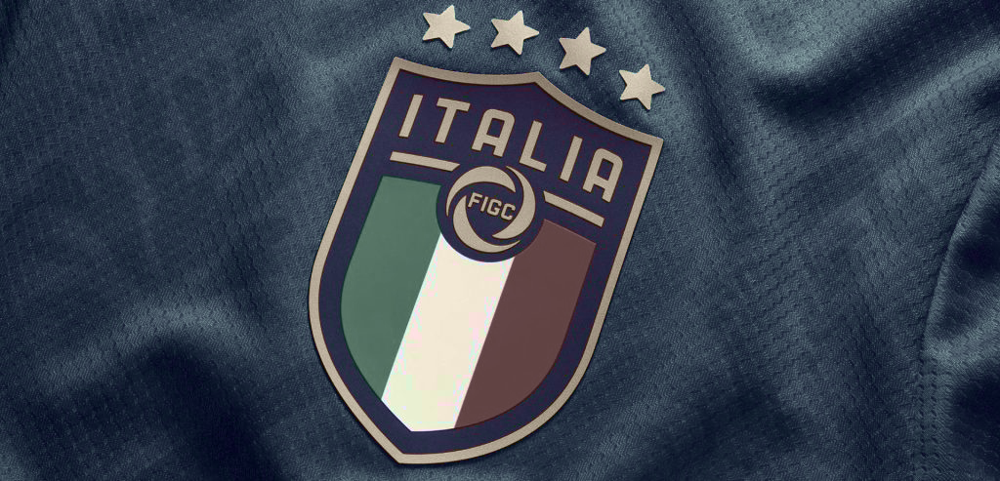

I sintomi della débâcle erano già tutti presenti davanti ai nostri occhi: una squadra stanca, da mesi in crisi di risultati e di gol, a cui infatti stavamo preparando un “onorevole” funerale contro il Portogallo martedì sera, giorno in cui, invece, giocheremo contro la Turchia una partita priva di senso tra due squadre già eliminate.
Nel 1929 Aby Warburg espose alla Biblioteca Hertziana di Roma il suo progetto per un atlante figurativo, il Bilderatlas Mnemosyne, una serie di tavole in cui erano montate una accanto all’altra immagini provenienti da epoche e culture differenti ma simili per gestualità e posture: fotografie di reperti archeologici e di opere d’arte dei secoli precedenti, ritagli di giornali e francobolli a lui contemporanei che mostrassero la ripetizione degli archetipi del comportamento umano. Montaggi che ricercavano il senso delle immagini non sulla loro singola superficie ma pescando a piene mani dall’archivio della nostra memoria collettiva, storica e iconografica. Quello di Warburg era contemporaneamente una geologia e una biologia delle immagini, un metodo per evidenziare come lo spettro delle emozioni umane si sedimentasse nelle differenti epoche e le sopravanzasse sopravvivendo nelle nuove immagini prodotte.
Nei minuti successivi alla partita contro la Macedonia del Nord ho cominciato ad associare i ricordi delle precedenti eliminazioni ai Mondiali con le immagini di quest’ultima, come se fosse possibile, per unione o contrapposizione, un’espansione della mia memoria, un mio atlante audiovisivo dei fallimenti della Nazionale. Ho cominciato a ritroso dalle ultime immagini che scorrevano sulla TV, quelle delle dichiarazioni a bordo campo, per poi passare alle lacrime dopo il fischio finale, ai gol subiti, fino alle occasioni da gol mancate.
«la fortuna che ci ha accompagnato si è trasformata in totale sfortuna»
Roberto Mancini

«I commenti»
L’immagine di Giorgio Chiellini, seduto su un piccolo sgabello con un microfono in mano, si è materializzata nello studio RAI per il commento “a caldo” con Alessandro Antinelli e Daniele Adani. Durante questi due anni di pandemia abbiamo cominciato a vedere questo format, l’intervista virtuale, che permette d’interagire coi giocatori e i membri dello staff tecnico direttamente da un set di ripresa preparato negli spogliatoi mantenendo così il giusto distanziamento. L’immagine viene trasmessa simultaneamente all’interno dello studio dando l’idea di un rapporto visivo tra gli intervistatori e l’intervistato non mediato.
Chiellini è entrato in campo all’89esimo e appena finita la partita si presenta davanti al microfono nella stessa situazione di Gianluigi Buffon dopo la partita del 2017 con la Svezia. È come se le immagini dei due momenti si sovrapponessero: due capitani, entrambi sul punto di dare l’addio alla Nazionale, che sono stati appena eliminati durante un playoff e che rispondono alla stessa domanda dello stesso intervistatore. Antinelli chiede: «come è stato possibile?». Per i primi sei secondi dell’intervista Chiellini non sbatte le palpebre; gli occhi rossi, spalancati, sembrano aver finito le lacrime mentre dice che «c’è grande delusione». La voce di Buffon è rotta dalle lacrime, parla e nel mentre si tocca le tempie, si asciuga ripetutamente gli occhi, sussume la sconfitta sotto il cappello del dramma nazionale: «abbiamo fallito un qualcosa che anche a livello sociale poteva essere veramente importante». Nelle interviste c’è un dettaglio simile. Mentre Antinelli chiede a Buffon se avessero forse sottovalutato l’impegno, il portiere spalanca la bocca per lo stesso lasso di tempo in cui Chiellini ha gli occhi serrati. È come se l’incredulità per il momento appena vissuto avesse bisogno di una mimica facciale dilatata, sconvolta.
Negli attimi successivi al fallimento l’analisi della sconfitta non basta, c’è subito la tentazione di guardare oltre. Fabio Cannavaro – anche lui appena ritiratosi dalla Nazionale – nella conferenza stampa successiva alla partita con la Slovacchia di Sudafrica 2010 parla del futuro del movimento calcistico italiano facendo una generale autocritica: «Se ci fermiamo dove siamo adesso ci mettiamo altri ventisei anni per rivincere un Mondiale».
«Futuro c’è – dice invece Buffon – perché noi abbiamo orgoglio, forza, siamo testardi, siamo caparbi». Non sappiamo più se il portiere parli della squadra di cui non farà più parte o elogi delle ipotetiche caratteristiche del popolo italiano. Chiellini riporta invece la discussione all’interno della dimensione della squadra: «Spero che per il futuro questo vuoto possa dare quell’energia che abbiamo avuto negli anni scorsi per ripartire».
Dei tre, Chiellini sembra il più lucido, forse perché è alla quarta delusione mondiale. È di nuovo nel punto più basso toccato dalla Nazionale, con la consapevolezza che «è difficile commentare a caldo, siam qua perché dobbiamo», con la rassegnazione del ripetersi ciclico degli eventi e la speranza che alla tragedia possa corrispondere, come nel 2021, la vittoria. Chiellini è il prolungamento emotivo del Buffon disperato di quasi quattro anni e mezzo fa, il suo dolore però sembra oramai essere anestetizzato, tanto che alla domanda: «è la tua ultima partita?» risponde laconicamente «credo si debba giocare anche la prossima» – quella con la Turchia.
Calcisticamente parlando, esiste una partita più sadica di quella tra due squadre che sono state eliminate da meno di una settimana da una competizione non ancora iniziata? Non bastano le immagini che già abbiamo?
«Le lacrime al fischio finale»
Al fischio finale i giocatori sembrano atomi che vagano per il campo. Le telecamere cercano le loro facce per capire come esternano il loro dolore interiore. Jorginho ha la maglietta tirata su per nascondere il viso, Marco Verratti lo racchiude nelle mani mentre è seduto in panchina. Chiellini si asciuga il naso con la maglia, si prodiga nel baciare sulla testa Alessandro Florenzi e Giacomo Raspadori con la fisicità di un padre che conforta i propri figli dopo una brutta giornata. Florenzi abbraccia Salvatore Sirigu che, con ancora i guanti tra le dita, lo cinge con una mano dietro la schiena e una dietro la nuca. La delusione si manifesta tramite posture afflitte e gesti consolatori mentre le lacrime sono assenti, nascoste o subito asciugate, escluse dalle immagini che vediamo.
Le prime lacrime che ricordo di una delusione mondiale sono anche le più vivide. Sono le lacrime di Franco Baresi al termine della finale Italia-Brasile di USA 1994. Dopo la premiazione per il secondo posto, dopo avere sbagliato il primo calcio di rigore della serie tirando alto sopra la traversa, dopo avere terminato la finale coi crampi, dopo essere rientrato dall’infortunio al menisco patito contro la Norvegia ventiquattro giorni prima e avere giocato una partita mostruosa, Baresi è scoppiato in un pianto lunghissimo. Nell’inquadratura stretta, lo vediamo prima appoggiato al petto di Antonello Valentini e poi abbracciato ad Arrigo Sacchi. È inconsolabile. L’inquadratura si allarga e notiamo che attorno a lui ci sono almeno sei persone dello staff tecnico. Sono tutti intorno al giocatore simbolo dell’Italia in quella finale.
Riguardando le immagini della partita, Baresi sembra avere giocato in uno stato di estasi. La sua attenzione contemplava un unico oggetto: il pallone. Nonostante la condizione fisica deficitaria, aveva anticipato regolarmente Romario e Bebeto, aveva frapposto il proprio corpo tra gli avversari e il pallone per tutta la partita, aveva fatto ripartire ad ampie falcate le transizioni offensive dalla difesa. Ora, in quel pianto a dirotto, coi capelli più gonfi ai lati e più radi al centro della testa, l’estasi è terminata. Baresi sta svuotando la sua immagine di difensore insuperabile; di lui è rimasto solo l’involucro umano che si sta consumando nel dolore, è «pura vita» come lo ha definito il regista cinematografico Werner Herzog.
«I gol subiti»
Tra le immagini successive al fischio finale e quelle precedenti c’è una differenza: nelle prime il fallimento è sancito, nelle seconde è ancora in atto, si dichiara nei gol subiti. La loro ineluttabilità si è intensificata negli ultimi anni. Nel Mondiale di Corea e Giappone del 2002 l’impossibilità di reagire al gol subito è prima di tutto regolamentare: il golden gol di Jung-hwan Ahn è la fine della partita. Era il 117’ e l’Italia avrebbe avuto circa tre minuti per pareggiare. Passa la Corea del Sud.
Al Mondiale sudafricano del 2010 il gol di Kamil Kopúnek arriva all’89’. Fabio Quagliarella riapre la partita un minuto dopo con un pallonetto meraviglioso. Sei minuti di recupero per pareggiare e l’occasione mancata da Simone Pepe. Sarebbe bastato un gol per accedere al turno successivo. Passa la Slovacchia.
Al Mondiale brasiliano del 2014 il gol di Diego Godin, libero su calcio d’angolo da marcatura, arriva all’81’. Nove minuti al 90’ e cinque di recupero. Anche stavolta sarebbe bastato un gol ma non abbiamo alcuna occasione. Passa l’Uruguay.
Giovedì sera il gol di Trajkovski arriva al 92’. Altri quattro minuti di recupero. L’ultima occasione della partita è il tiro di Florenzi che impatta sul corpo di João Pedro ed esce sul fondo. Passa la Macedonia del Nord.
Se fosse possibile rappresentare su un’unica tavola queste sconfitte sarebbe corretto giustapporre le immagini dell’esatto momento in cui cambia il risultato sui cronometri digitali che scorrono sui teleschermi. Quando l’Italia subisce il gol che decreta la sua eliminazione c’è sempre troppo poco tempo per reagire. Non sembra esserci possibilità di modificare l’inclinazione del piano su cui sono situati gli eventi avversi. Il tempo per recuperare è già finito, o forse non c’è mai stato tempo. Come giustamente afferma Emanuele Mongiardo: «c’è la sensazione che il risultato sia compromesso prima di entrare in campo», come se la mancanza di tempo fosse trascesa in una rassegnazione aprioristica. A ricordarci questa dimensione in cui siamo entrati potremmo inserire l’immagine di un cronometro bloccato al secondo zero del minuto zero di una partita a eliminazione diretta. I fallimenti della Nazionale sono oramai sempre fatalisti.
«Le occasioni da gol»
Le occasioni da gol sono lì a ricordarci ciò che poteva essere e non è stato, sono immagini di orizzonti possibili e che si sono negati. È il 63’ quando Domenico Berardi taglia da destra verso sinistra dietro la difesa della Macedonia del Nord. Con il braccio destro alto ha richiamato l’attenzione di Marco Verratti, che lo asseconda con un lancio a scavalcare i due difensori centrali. Berardi stoppa il pallone di petto in corsa, lo lascia cadere a terra e di controbalzo calcia di sinistro. Il pallone esce in calcio d’angolo e non entra in porta solo per l’intervento del terzino sinistro Alioski, che chiude una diagonale pazzesca scivolando dietro Berardi e toccando il pallone con la gamba sinistra. Stole Dimitrievski, il portiere macedone, abbraccia il compagno di squadra mentre Berardi si rialza e borbotta qualche parola. Il suo viso è basito.
La sua reazione è completamente differente rispetto a quella dell’occasione che ha avuto al 29’. In una fase di pressing Berardi comprende le intenzioni di Dimitrievski, corre in diagonale verso la lunetta dell’area di rigore e anticipa il passaggio del portiere. Un, due, tre passi col pallone e sulla linea orizzontale dell’area calcia un tiro troppo fiacco. Sembra che al tiro di Berardi a porta vuota il pallone si sia improvvisamente sgonfiato. Dimitrievski compie cinque veloci passi per tornare tra i pali e scende agevolmente a terra per bloccare il pallone. Sembra non esserci fatica nella sua parata. La telecamera inquadra subito Berardi che impreca urlando mentre si tira la maglietta. È un’occasione da gol talmente unica e al contempo brutta che non ho memoria d’immagini simili.
L’occasione del secondo tempo mi ha ricordato un’azione del passato non tanto nell’esecuzione quanto nella reazione. Dopo aver colpito il pallone in caduta, Berardi rimane inginocchiato a terra. Le sue braccia sono allungate in avanti, le mani sono parallele, hanno i palmi rivolti verso l’alto. Berardi mette in scena sul campo un classico gesto di stizza italiano, una nuova declinazione del suo “ma guarda questo”. Berardi vive una frustrazione grande quanto Alioski, che è il destinatario della mossa.
Al 102’ del quarto di finale Francia-Italia del Mondiale 1998 Roberto Baggio “realizzò” uno dei quasi gol più belli della storia del calcio. Su un lancio di Demetrio Albertini dalla trequarti della fascia destra Baggio entra in area di rigore tra Lilian Thuram e Laurent Blanc, guarda il pallone, che arriva dalle sue spalle, e dall’angolo dell’area piccola lo colpisce al volo di collo destro a incrociare sul secondo palo. Fabien Barthez non può far nulla, cade a terra a braccia spalancate, mentre il pallone lo scavalca attraversando lo specchio della porta per poi uscire di pochissimi centimetri. Non c’è nessuna deviazione. Oggi, a riguardare le immagini sgranate della partita si ha l’impressione ottica che il pallone tocchi il palo. Baggio si mette le mani sul viso, salta una, due volte mentre esce dal rettangolo di gioco.
Tra le due occasioni non sembrano esserci similitudini fuorché per i due lanci lunghi provenienti dalla trequarti e per la vicinanza del tiro alla porta. Tuttavia c’è un’immagine della reazione di Baggio che viene catturata dalla regia. Un singolo frame in cui si rivolge a un compagno di squadra fuori campo. Baggio è in piedi, cammina, le braccia sono piegate in avanti e dalle mani, che si trovano all’altezza del petto, sbucano i due indici paralleli. Le due dita stanno misurando approssimativamente di quanto è uscita la palla. È uscita di tanto così: quindici centimetri, forse di meno, forse di più.
Baggio e Berardi rappresentano la loro reazione all’occasione mancata utilizzando la capacità tutta italiana di esprimere e condividere tramite un singolo gesto un sentimento interiore. Che sia un calcolo dei centimetri o una manifestazione di frustrazione, il fondo comune di disperazione viene espresso in quelle immagini tramite il movimento delle mani.
«Epilogo»
Da tifosi, che cos’è la sensazione di un fallimento sportivo se non lo stato d’insolvenza di una squadra o di un singolo atleta verso i nostri desideri? Le delusioni che ho vissuto per la Nazionale hanno avuto spesso tonalità emotive differenti a seconda dell’età che avevo, delle aspettative che nutrivo nei confronti della squadra, di come era accaduta la sconfitta. C’era la commozione del 1994, l’indignazione del 2002, l’appagamento del 2010, l’angoscia del 2018, sentimenti differenti sviluppati intorno a immagini di fallimenti con le loro somiglianze e differenze. Per come è avvenuto, il fallimento vissuto stavolta ha assunto i tratti dell’incredulità. Sembra il peggior fallimento possibile perché viene dopo la vittoria all’Europeo, eppure possiamo comunque riporre la nostra fiducia nel progetto tecnico-tattico della Nazionale di Mancini, basato sull’organizzazione, su princìpi moderni come il gioco di posizione, il pressing, il gegenpressing. Servirà autocritica come già diceva a luglio Daniele Manusia, servirà un controllo su ciò che è accaduto durante gli Europei come scrive Jonathan Wilson. Sarà comunque necessaria anche la consapevolezza che la squadra sbaglierà, perderà ancora, che ci saranno nuove immagini di fallimenti da unire alle vecchie.
Forse il pallone “sgonfio” calciato da Berardi rimarrà un’immagine d’archivio solitaria o forse riemergerà nel futuro, accanto a un altro pallone calciato a porta vuota. Basterà, come affermava Beckett nella sua novella Worstword Ho, cercare di fallire al meglio delle proprie possibilità: «Ever tried. Ever failed. No matter. Try again. Fail again. Fail better».